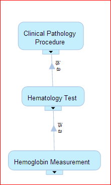
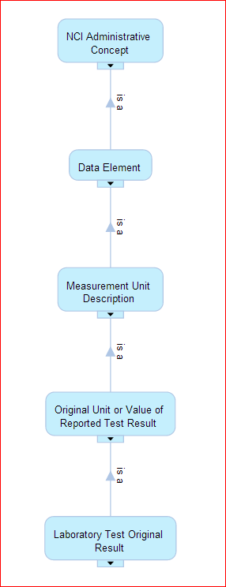

January 2013
Planning next #CDISC2RDF blog post cdisc2rdf.com Practical steps to enrich and transform #CDISC standards in Excel to RDF
“The #LinkedData principles provide a common API for data on the web .. instead of many seperate APIs” 3roundstones.com/2012/12/04/new…
I'm reading @Prototypo's, @mhausenblas' et al #LinkedData book under development 3roundstones.com/2012/12/04/new…
.@EMA_News Let us know when you're looking for volunteers to test your information published as #LinkedData 5stardata.info
My comments on @dianthusmed's blog post on sharing raw clinical trials data dianthus.co.uk/sharing-raw-da… #ctdata
NCI Thesaurus has terms for #CDISC Lab Tests e.g. Hemoglobin,("HGB") but not for the outcome Data Element

I just learned that NCI Thesaurus defines #CDISC Data Element terms e.g. ORRES, LBORRES bioportal.bioontology.org/ontologies/476…

Intersting blog: Better diagnosis coding, by Bill Hogan, that I am now following: no-icd10cm.blogspot.se #ontology
American Cardiology Society Makes Ontological Errors, by Billy Hogan, ontologyblog.blogspot.se/2013/01/cardio… (via hl7-watch.blogspot.se) #ontology
Check out "Länkade data i Sverige" ldsv2013-estw.eventbrite.com via @bBalsa #LinkedData #LankadeData #ldsv
MT @mlamoure: Expert Cecil Lynch says "Value Set Versioning" isn't discussed enough in the #semanticweb world < also a #EHR4CR topic
Pointing colleagues to free online #SemanticWeb course, starts 4 Feb semanticweb.com/free-course-on…
#CDISC2RDF cdisc2rdf.com will be presented at #CSHALS iscb.org/cshals2013 28 Feb. I'll not be able to participate :-(
. @dianthusmed #CDISC SDTM do not mean "anyone ... would know exactly what the data mean", see w3.org/2012/Talks/110… #ctdata
One more thing to follow up from #EHR4CR meeting: PHAST Common Terminology Services 2 (CTS 2) wiki.phast.fr/index.php?titl…)
Great to see W3C HCLS wiki page: Clinical Observations Interop. w/ links to EU/US initiatives w3.org/wiki/HCLS/Clin… #EHR4CR
Study Design Model from #CDISC, yet another "model" to have look at in the next step of #CDISC2RDF, from the #EHR4CR meeting
Listening to Landen Bain, #CDISC, on Clinical Research Document (CRD) ihe.net/Technical_Fram… at #EHR4CR meeting
Nice demo from ISWC2012: youtu.be/KHtlARfex4c Interesting paper: Efficient SPARQL-to-SQL for RDF and OWL iswc2012.semanticweb.org/sites/default/…
+10 “creating the best partnership between people and machines” bmj.com/content/346/bm… @mavergames et al #LinkedData
.@EMA_News Why not publish reference info such as ema.europa.eu/ema/index.jsp?… as 5-star #LinkedData #opendata 5stardata.info ?
. @IMI_JU Why not publish datasets such as imi-protect.eu/methodsRep.sht… as 5-star #LinkedData #opendata 5stardata.info ?
Q: How avoid the copy-and-paste frustration of data standards implementors? A: Use RDF. Ping @CDISC #CDISC cdiscguru.blogspot.se/2012/12/anothe…
I look forward to the Convergence meeting tomorrow on semantic interop. w/ @Open_PHACTS @eTRIKS1 #EHR4CR @SALUSProject_EU @Linked2Safety
Direct link to the #CDISC2RDF ontologies code.google.com/p/cdisc2rdf/so… See also my blog post: cdisc2rdf.com #CDISC
+1 MT @frepa: Öppna länkade data för skolan vinnova.se/sv/Resultat/Pr… #öppnadata #oerswe #LankadeData #ldsv
+1 RT @egonwillighagen: Fwd: chem-bla-ics: CHEMINF example #1: encoding InChIs bit.ly/Sr66YI (cc @Open_PHACTS)
Machine *Processable* (Data reasonably structured to allow automated processing) GT / > Machine Readable opengovdata.io/2012-02/page/5…
New blog post: First version of #CDISC2RDF published cdisc2rdf.com/2013/01/20/fir… #CDISC #SemanticWeb
Data Definition Ontology (based on #D2RQ) for clinical data integration ncbi.nlm.nih.gov/pubmed/22874148 < What about defining SAS datasets?
Barry Smith in An Ontologist's Guide to #HL7 bioontology.org/ontologist%27s… [webcast]: #OGMS is how the HL7 should be" code.google.com/p/ogms/
+10 Opening Walled Gardens: RDF/LinkedData as the Universal Exchange Language for Healthcare dbooth.org/2013/mu/MU-Sta… #MeaningfulUse
A late #FF #FollowFriday goes to @JohnMHancock for his great feed of links to papers in #semanticweb #ontology #informatics
Great discussions w/ @aasinaci and Gokce Laleci about #MDR based on #ISO11179 at @SALUSProject_EU meeting #SemanticWeb
Early, cold morning on my way to @SALUSProject_EU's Advisory Board meeting. Dissemination. material: srdc.com.tr/projects/salus…
My comment on @dWiseTech's blog: The Past, Present, and Future of Clinical Data Standards hub.am/XjXToe
Listening to @gray_alasdair presenting @Open_PHACTS dataset descriptions openphacts.org/specs/datadesc/ Slides slideshare.net/alasdair_gray/…
The Past, Present, Future of Clinical Data Stds hub.am/XjXToe @dWiseTech < "Shadows of things that May be", see w3.org/2012/Talks/110…
Top 10 Medical Research Trends to Watch in 2013 huffingtonpost.com/mobileweb/marg… < No 7 Data standards: #CDISC #TransCelerate
MT @bioontology: An Ontologist's Guide to #HL7, Barry Smith shrd.by/bZ1eAj < Interesting NCBO Webinar in the #HL7WGM week
To read "Classifying Processes: An Essay in Applied Ontology" ontology.buffalo.edu/smith/articles… #ProcessProfiles
+1 MT @trished: News in #BMJ is paywalled; but research isn't, nor our editorials on setting data free< Re. bmj.com/content/346/bm… #AllTrials
Great quote "Ontological understanding of data is more critical then the volumes of data" @john_reynders #jpm13 via @JonathanHirsch
MT @trished: SPIRIT 2013 (Std Protocol Items: Rec. for Interventional Trials) bmj.com/content/346/bm… << Relationship to #CDISC ?
Anyone know when Google's Medication Knowledge Graph willl be available? thenextweb.com/google/2012/11…
I learned about Research Data Alliance @RD_Alliance today. Launch and First Plenary in March
rd-alliance.org/invitation/ In Gothenburg!
rd-alliance.org/invitation/ In Gothenburg!
MT @jcdecker71: Have an idea to collaborate with the FDA? phuse.eu/Call_for_NewPr… < Yes: Max. x-study analysis potential w3.org/2012/Talks/110…
Summary of the #FDA Study Data Exchange meeting ow.ly/gxGTG RDF is still winning in @PHUSETwitta's poll ow.ly/gckog
Short n' sweet talk "Why Schema[.]org (for libraries)" @rjw slides: slideshare.net/rjw/why-schema… audio: scivee.tv/assets/audio/5… #linkeddata
Yes! > "Is Linked Data the future of data integration in the enterprise?" blog.nxp.com/is-linked-data… via @iradche #LinkedData
+1 RT @hughglaser: It's so hard to do to the pain of SQL when you have got used to the ease of #SPARQL.
"There was general interest in semantic web," from @US_FDA's meeting on Study Data Exchange standards fda.gov/Drugs/Developm…
Slow start of 2013: Some reading in prep. for @SALUSProject_EU's Advisory Board meeting and @IMI_JU #EHR4CR workshop in mid Jan.
My 3rd online course 2013 starts in April: Introduction to Data Science
by @billghowe via @coursera See kerfors.blogspot.se/2012/12/my-moo… #MOOC
by @billghowe via @coursera See kerfors.blogspot.se/2012/12/my-moo… #MOOC